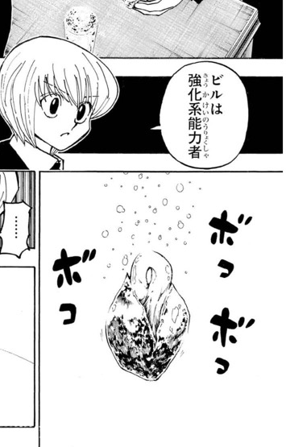

ビル
- 登録名
- ビル
- 分類
- ハンター
- 初期配置（現在地ではありません）
- 第1層 1014号室
初期配置は台帳の当初の担当先です。後任の人物や復元枠も含み、全員の出航時の在室を示すものではありません。後の展開は下の折りたたみにまとめています。
人物詳細（後の展開を含む）
- 状態
- 存命
- 所属
- ビヨンドチーム（協専）
- 役割
- 第14王子ワブル護衛／ビヨンドチームの協専ハンター
- 最後の所在
1014号室内の主寝室（第376話時点・場所は画像で確認）
ほかの関係記録（本人の在室は未確認）
- 念使用の確認
- 念使用：確認済み
- 念系統
- 強化系
- 念能力
- 球根（ハルジオン）：対象に手をかざし「発」を発動することで成長を促進する強化系の補助型能力。植物の種に使えば発芽させることができる

編集状況
- 人物ID：P14-H02
- 状態の確認話数：未登録／根拠の出来事：未照合
- 公開データの登録情報から生成したページです。個人メモ・編集内容・調査記録は含めません。
- 一覧の詳細でメモ・編集
情報源：公開人物台帳・公開出来事台帳。